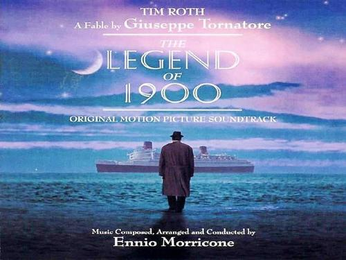
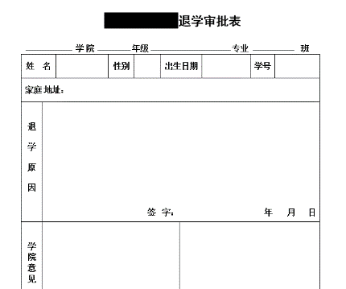
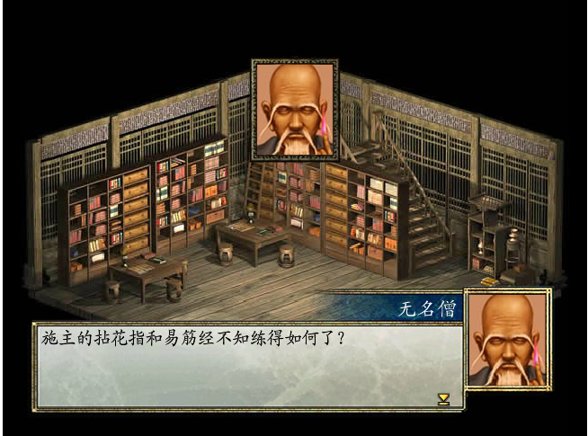

用了这种格式的文题，无形中便被挂上了鲁迅所赋予的悲剧和沉重，来讲1900这个“特例独行”的人。
我们往往会以“天才”“痴子”称呼1900这样的人，他们“特例独行”甚至“玩世不恭”。我们羡慕他们，却无法理解他们，因此也成为不了他们。
电影中几次说到“要有一个好故事”，然而1900的故事却也很简单：一个出生，一个挚友，一次比赛，一个几面之缘的女孩，一次尝试，一次爆炸。除去最后一个，其余都很平常，每个人都经历过。可他有个“好故事”，我们的故事没几个人愿意听，之间的落差不叫“天才”，而叫什么呢?我不知道，是清醒吗？
关于自我。1900“天才”的起源是从小极好的钢琴天赋。他儿时在船上消失了几天，最后在钢琴旁出现，他用几天时间发现了自己的爱好与天赋，为之倾注毕生时光。我们从小就被教育天生我材必有用，我也是相信每个人都有自己的天赋的，但我们自问一句，我们长久的热爱何在，我们的一技之长何在？我们活在世上已经那么久了，能底气十足地答出来吗？我们常说枪打出头鸟，我们永远跟在大部队一起走一样的路，我们宁愿并且甘愿泯然于众人。王开岭说人群是人的坟墓。差异导致孤独，我们丢了个性以换来共鸣。“愿所有的星星都在自己的位置上闪耀”，不要浪费自己的才能，不要辜负自己的生命。
关于远方。1900曾经尝试登上陆地，去往彼岸。他不屑于名望与财富，同时也惧怕陆地与街巷的无穷无尽，最后又折返船上。有关前者，记得一个细节，令人心寒——一次舞会上，众人一如既往为他的演奏欢呼叫好时，一声“America”的呼喊立即让人群作鸟兽散了，冲上甲板欢呼到了目的地，留下1900一人独坐在钢琴前。人们仅为这种音乐的快感癫狂，而并不真正尊敬伟大的音乐家。倘若1900失足从船上落入海中，这些人也许没有一个舍身相救的。他拒绝上岸获取他应得的名誉与财富——那些本来就是假的。人一旦陷入这种泥淖，所有的希望，自己的努力，梦想与抱负都是由他人激发的。追求的那个受到赞扬的图戳，还不是自己盖上的，他在这种奋斗中找不到快乐，成功时也没有快乐。安兰德说：“每一种类型的快乐都是个人化的。我们生命中最伟大的时刻是个人的，受自我激发的，不是被动的。”看看周围的世界，四处都是“被占领的人”。许多名人大红大紫之时，呼风唤雨；一旦风光不再，便一无所有，这故事不太精彩。
有关后者，有人笑1900是个懦夫，他局限于船上，除了弗吉尼亚号以外便不敢去探索任何新世界。说得也许有道理，但是生活在陆上的这些说话者敢吗？几乎没有。我们不在船上吗？在的，世界真大，我们太小，只能居其一隅，常去的几个地方，常走的几条街巷，便是我们的弗吉尼亚号。我们偶尔会去更远的地方行走，去串门，去旅行。的确，我们进入了新世界，可只是匆匆打马而过，见过了那里的草木，却没见过居住在那里的风露。我们终究还是没去过别处，我们只有自己的弗吉尼亚号，只是弗吉尼亚号会有时启航，换换自己在天地间的位置，看看不同地方的海。也会有乘它旅行女孩，从你的全世界路过，几面之缘，几许微笑，几度光阴，终究得下船去往别的地方，花开两朵，天各一方。我们小小的生活，注定的，不如去好好打理你的弗吉尼亚号，让生活舒适地充满它。
关于去留。在弗吉尼亚号爆炸前，1900是否应该下船，成了电影的核心争议问题。1900与挚友麦克斯的对话与双只右臂弹琴的苦涩玩笑成就了本片的最高人气点。1900不敢下船，令他害怕的是看不见的无尽，人太渺小，他也是，只能演奏88键的钢琴，在有限的琴键中创造无限的音乐，而琴键无数多的钢琴只有上帝能弹。况且，他不愿让世俗沾染他神圣的音乐，与其妥协不如灭亡。活着，还是活得安心？To be or not to be?凡人愿意忍辱，天才宁愿玉碎。这个问题与先前的有所不同，这不存在对与错，优与劣。每种人都获得了自己最看重的东西，谁也不比谁亏。在这样的终极问题上，上帝总是给我们留下了大欢喜结局。
除去这些，1900除了名字以外便与常人无异。除去这些，他只是众多音乐人中的一个，无人问津。除去这些，也就没有人会来讲他的故事。如果1900放弃了这些走了，走后会怎样，应当不用我来猜了。
这些指什么？没有一个准确的词来回答。不过想要一个好的故事，肯定不能像个罐头一样跟大家活得一模一样。“常人”与“天才”往往只差了这点选择与匠心，最后呢，就只有“梦破碎的声音”。
加缪说：“我的灵魂与我之间的距离如此遥远，而我的存在却如此真实。”你的存在且当它是真实的，怎么对待你的灵魂，请君自便。
 - 李星诚
有次去看舞台剧，开演前有对观众的双语语音提示，示意观众安静。但值得注意的是，汉语提示仅“请全场保持安静”几字，而英语提示给出了理由——演出即将开始，要营造启幕时的良好氛围、也给演员充分的尊重。不懂英语的人面对命令似的要求，很可能不解其故——等候开场之时何故不能说话，甚至会对剧务组产生误解。
为什么广播的时候不愿意多加几个字？盖以为理由是次要的，或以为理由是万众皆知的，无需再强调，总之最后的效果安静达到就好。至于不明所以的观众，便一头雾水地被牵着鼻子走，进入剧组“设计”好的轨道。
每天各种消息、通知侵袭并影响着你我的生活，它们附有相应的理由才让人活得明白，感觉生活的自主权把握在自己的手上；反之则感觉遭人绑架，如同精神拐卖。
人的天性之一就是好奇“为什么”，一个平等的社会一定是讲理的社会，绝不会轻视理由的价值。主奴关系中，主子才可以无条件地使唤奴仆。公共事务的组织者，应当与被组织者真正建立平等的关系，其第一步就是在做出决定时向所有受众公开其理由，并接受群众的询问和质疑。只有双方都给出了充分诚恳的理由，才有真正商讨谈判的可能。拒不提供理由，只会导致信息不对等。缺乏信息的受众不能理清自己身处的现状，会渐渐丧失做出公允判断的能力，逐渐陷入被动，被主动的一方玩弄于股掌，或是臆造阴谋论互相攻击——为什么不攻击造成这一切的主动方？到那时候早已找不到他们藏身在哪了。
为什么有人做事总不给或不愿给理由？我想好一点的情况是没有这个习惯，对其重要性不以为意。例如上面剧组的例子，的确没有恶意，但久而久之不利于理由意识的形成，与社会尊重个体权利的目标拉开了距离。虽然大家都知道外面在下雨，但“因下雨，课间操暂停”还是让人心里舒坦一点，明白自己所处的集体环境还是明朗的晴天。
不太好的情况便是有意识的恶人在让别人习惯了“我做事不给理由”之后做起没有理由、上不得台面的事了。下架盗版和“不合国家利益”的影视一起干；维护正义和谋取私利同时下手，反正所有的事情都是一个谜，“安能辨我是雌雄”？如上文所说，理由的缺乏所导致的信息不平等，也是一种隐形的扩大权力的手段，有意制造高低贵贱的方式。众所周知，权力的野兽需要群众监督的牢笼来约束，因为如果没有约束便会越长越大。而如果群众眼前被蒙上的黑布，连巨兽在哪里、做什么、理由何在都不得知，谈何约束？遂两方越拉越远，不得理解，“牺牲一部分个人权利以换取集体安定”被有意识地分化为两个阶级。
我到现在没有对RYB事件发表过明确的看法，昨天官方消息并无直接的自相矛盾，可以说真实情况确如官方所言的概率并不是没有，但是为什么绝大多数人（包括我）选择不相信？当然，事件本身的情况占据了重要的理由，尤其是“当一件事可以被自证清白的时候却没有做到这点，往往意味着这样的‘清白’并不存在”，亦即官方掌握着足够的理由和证据来揭开事件的真实情况，但是没有让所有公众享受到理由的权利，留给公众的只有一个它们所下的结论。无论这个结论是真是假，剥夺公众理由的权利本身就已经是对民主社会的践踏。另一方面来看，理由的权利几乎向来就没有被保障过，太多太多的事情留给我们的只有最终决定和最后结论，信不信由你。长此以往，官方的作为度和公信力必然会丧失殆尽。
下面的话就不能再说下去了，你们知道我的意思了吧，这年代说两句话真难啊。
天还没有亮的时候，小鹿睡得正香，闹钟叫了。小鹿已经数不清这是第几个连续早起的早上了。宿舍是小鹿的家，小鹿的家里装着两只电灯泡，电灯泡很亮。胡乱洗漱过了，小鹿在灯前将书打开了。这书小鹿是很熟悉的，毕竟他已经复习了两天之久了。比起明天将考的另一本书，能复习两天自然是很好很好的。
天道开始有点亮了起来，天亮起来是一点一点的，天一亮灯倒不亮了。小鹿现在抓了书包出门，能吃到早饭是很好的，从早上八点连课到晚上九点就不太好了，明天要考两门试的话就更不好了。小鹿是想坐在前排听课的，可听课是不便于复习的，当下复习是有用的，有用的有用的东西是好的，这些小鹿都是知道的。回去和室友吹了很久的牛皮，再睡一觉，一天的疲劳也是可以忍的。
休息是不存在的，小鹿从五一前的一两周就不知道休息是什么了。学校五一只凑了三天假，凑得的假都是要在周末还的。恰好五一之际，还有一个什么建模，总之连996都是很羡慕的。①
①仿写自陈村小说《一天》，据真实事件改编。
学期已然过半，期中的特点便是已然结课的即将考试，下半学期的课程已经开课。古语曰，听课我所欲也，复习亦我所欲也。二者不可得兼，因为考试周一样满课。结果自然是落得一个上下不比的结局，面对惨淡的成绩和百废待兴的新课，应该怎样恢复状态？
如果分析这一切的根源，便在于上了中国高四大学②，那么从根本上解决问题的方法便是退学了。既然已经考得难以翻身了，不如就直接开始放暑假吧。直接退学的话，可以有四个多月的暑假哦。
②中国高四大学，全国分校数量最多，分布最广的大学，几乎遍布全国每一个主要城市，在华东、华北地区尤其密集。其最大的特点是隐秘办学，从不挂校名。
在很开心地填写退学申请表的过程中，可以迫使自己思考退学后的出路问题。如果再次高考，很可能什么都考不上，运气好的话不过是考入中国高四大学在另一座城市的分校，一切再来一次罢了。如果不再读书，却也不会木工瓦工的手艺，修汽车也是不会的。周大师③说现在人才市场人头攒动，没有学历也没有本事是没有饭吃的。
③鹿衔草.周远宏语录[M].南京：南京师范大学附属中学出版社，2017
前段时间小鹿把手机摔坏了，伺机想下单一部顶配iPhoneXs Max，做一个摸摸党用上14天然后无理由退货，或者许还能录个开箱视频投B站。就在付款前小鹿发现了很多问题，手机发来是没有膜也没有套的，而手机屏幕又是很大的，两周内若有了碰磕甚至跌落，不仅无法退货甚至还要花钱修的。
同样的道理，在提交退学申请表前是可以促使人认识到其中利弊的。尽管不论退学与否日子都很难过，人总得选一个的。不过好在这个选择的总比在苹果硬件和安卓系统里选一个，或者在特朗普和希拉里中选一个要轻松得多的。
既然已经打定主意扔掉退学申请表，恭喜你已经获得了一个欺骗自己继续努力地读下去的理由了。
调整状态，总得从调整上课状态开始。
课后要到老师的微信号，并与其亲切交谈，向其明确自己要好好学习的决心，并请老师上课时帮助监督自己。为了避免表意的假大空，最好准备一两个问题一同请教。如果没有听课问不出问题，问一问作业题也是无妨的。
随后上课时务必坐在前两排，并给老师一个眼神提醒老师，老师总是喜欢上课想要认真听课学习的孩子的。如果贯彻得好，不出意外地话可以得到一个好看些的平时成绩，生赚一笔。
于此同时，最好是带上纸笔做些笔记的，随便从PPT或是课本上找些东西记就可以，如果能感觉出重点就更好不过了。鹿透社④的研究表明，笔记的意义在于一定程度上控制自己的精神和手，一直在动的精神不易睡觉，一直在动的双手可以少碰点手机。至于记的内容和是否复习则无关紧要。
④鹿透社，鹿衔草透支研究社的简称。
更加刺激则可以定下每日任务，每天早上告知室友并给其50元。如果当日晚间可以完成则取回，完不成则归室友。久而久之即便无法完成，碍于面子室友总会用你的钱请你吃饭，故而不算太亏。总比肝本子要好得多了，费钱费神还徒惹生气。
如果你像小鹿一样，非常累的直接原因是因为课太多了，那么直接登录教务系统退掉两三门课是非常有效的。
虽说要想毕业这些课迟早还是要上的，再次选课的话还是要忍受土豆服务器的，万一选不上还得受教务老师的数落的，即便选上了也是要觍着老脸和学弟学妹一起上课的，消息通知也是较为闭塞的，考前复习也是缺少环境的。
不过管他呢，至少现在轻松多了。可以利用空闲的时间试图旅行、谈恋爱、睡大觉，就像学期尚未开始一样，过得数日以期找回开学初的冲劲和状态。至于以后，中国高四大学的学生常常是无暇顾及以后的，因为能活到下个月就已经很满足了，想太久就有些杞人忧天了。
其实学期中这会所有人都很心力交瘁，状态不好也绝不是几个人的问题。这个时候只需要找准一个目标，和他同归于尽即可。
第一种情况，是如果你找小鹿这样的目标，而他每天学习10分钟，娱乐2小时，不知道在瞎忙什么10小时。你大可以每天学习半小时，娱乐10小时，不忙乱七八糟的事情。这样你会觉得很快乐，而小鹿觉得很疲倦，同时你还能比小鹿学到更多的东西。虽然这样的生活依然非常低效，不过至少可以保证你不是身边人当中最差的一个，大不了和小鹿同归于尽。
第二种情况即是，找小哿这样的学霸作为目标，而他每天学习10小时，敲代码6小时，娱乐30分钟。那么你就学习12小时，敲代码12小时，不娱乐，比他更早成为007的程序员。争取在猝死之前更早成为阿里或者华为的员工，身死犹荣，以实际行动修攒福报，最好还能荣及子孙。哦对不起，忘记了007是没有时间谈恋爱的，更无谈子孙了。这便是另一种的同归于尽。
很多时候一切困难都只是心病或心魔。如果能够不躁不怒，将各类琐事一一处置，就会发现一切都全然不同了。至于修炼的方法有很多，例如去努力达成“十里坡剑神”⑤，不过难度非常之大。简单一点便是去少林寺偷《易筋经》和《拈花指谱》，越非效果越佳。
⑤十里坡剑神：指在游戏《仙剑奇侠传一》中第一个战斗迷宫十里坡内让主角李逍遥练成终极招数“剑神”，需要不可想象的耐力和时间去完成。
（盗经需要分别逃过山门和藏经阁的弟子，而后还有可能遇上扫地僧，不碰上的话也大概率偷得佛经而非武经。）
待得练成之后就会发现，其实并没有什么卵用，因为事情并不是一件一件来的，而是分为排山倒海型、十万火急型和DDL前一天突然想起来型三大类型。所以来说除了心态之外，效率也是非常重要的。
不过虽然单纯练心态不能真正解决问题，但是没有什么心态问题是沙雕图不能解决的，如果有就再找一个沙雕网友，另外就是关注一下我了。
最后祝大家身体健康，成功渡劫期中后。
Copyright © 这东西有Copyright吗，装模作样做一个吧